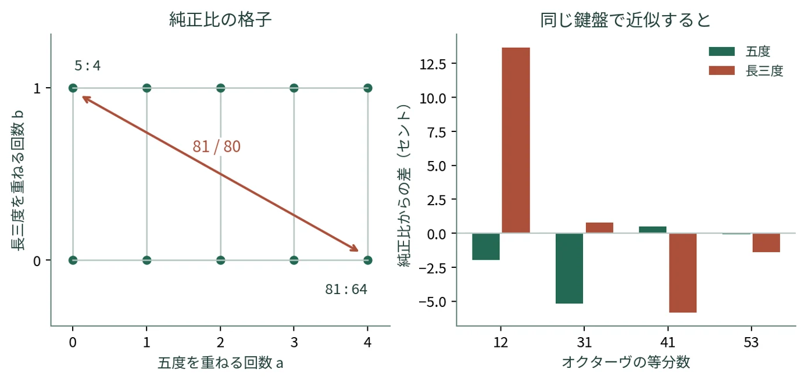

第52章 鍵盤に折り畳まれた二次元の音
五度と長三度の二方向の格子で音律を描き、連分数で良い平均律を探す。
この章で学ぶこと
- 純正比を（五度, 長三度）の格子点として表す
- 連分数から 12・41・53 平均律が現れる理由を知る
- 12平均律・31平均律・純正の長三度のうなりを、予測してから聴く
ドからソ、レ、ラ、ミと純粋な五度を四回たどる。次にドから一気に純粋な長三度でミを作る。二つを同じ高さのオクターヴまで運ぶと、同じ名前の「ミ」が二つできる。常用の鍵盤では同じ鍵を押す二つの旅程が、周波数を測ると異なる点に終わる。このずれを消す、少し残す、あるいは旋律の材料にする。鍵盤の設計とは、どの道を合流させるかを決める幾何学でもある。
音の格子と二通りのミ
基音の周波数を とする。周波数を二倍した音を同じ音高類とみなす。五度を何歩、長三度を何歩進んだかをそれぞれ整数 に記せば、格子点 が表す比は である。負の歩数では逆数を掛け、最後に二の整数乗で割って比を に戻す。 は 、 は 。前者を後者で割ると 。これがシントニック・コンマである。格子がもともと持つ二方向を、ミの名を同じにするために結んだときのずれを表す。
命題。 この理想化した純正比の格子では、異なる二点がオクターヴ移動だけで厳密に重なることはない。証明。 二点の歩数の差を とすると、重なる条件は を満たす整数 の存在である。すべての負の指数を分母側に移して両辺を払えば整数の等式になる。素因数分解の一意性から、両辺の と の指数差は各々零。よって 。この証明は演奏者が近い音を同じと認識するかどうかについて仮定を必要としない。理想周波数での等しさと、聴取課題で聞き分けられる範囲は別々に測定できる。

音程を選ぶと分母が現れる
一オクターヴを 等分した楽器の一段の周波数比は 。純正五度 に近い段を探すため、周波数比を倍にすると一を足す目盛り、二を底とする対数を使う。 と置き、 をこれに近づけたい。 が決まれば は の最近接整数でよい。逆に鍵数を選ぶとき、どの を候補にするか。ここでリズムの余りを再配分したときと同じ「整数部と残りに分ける」操作が働く。
とし、、 と進む。逆数を取るため、捨てるには小さかった余りを、次は拡大して測る。得た整数部の列は初めから 。等式 を順に代入し、有限段で打ち切ると連分数の収束分数が得られる。たとえば 。さらに一段入れると 、その次が 、次いで となる。通常の十二等分音律の五度が七段であることと、五十三等分では三十一段が五度に近いことを同じ一本の計算が結ぶ。
誤差を比べるため一オクターヴを1200セントにとる。純正比 に対する符号付き偏差は セント。正なら広く、負なら狭い。十二等分の五度は セント、四十一等分は 、五十三等分は 。では三十一等分は何に役立つのか。五度で約 セントでも、十段の長三度が に対して約 セントに入る。十二等分の長三度は約 セントある。連分数は一つ選んだ目標への近さを扱う。五度を先に選んだときの鍵数と、長三度をも良くしたいときの鍵数は違ってよい。
うなりの秒数を予測してから聴く
本書の音例は根音220 Hzに対し、十二等分、三十一等分、純正比の順に長三度を三度鳴らす。両音は第5倍音までを含む。純正なら下の第5倍音 Hzと、上の第4倍音 Hzとが重なる。十二等分の上声は約277.183 Hzなので二つの部分音の差は約8.73 Hz。三十一等分の上声は約275.124 Hzで差は約0.50 Hz。注目すべき時間尺度は毎秒の細かな震えから二秒で一巡する緩い揺れに変わる。その二成分の振幅は同一ではないため、合成音が完全に消える瞬間を探す必要はない。低域から離れた一部分のざわつきに注意を移すと比較しやすい。本書の試聴《三つのミ》
ファビオ・コスタ《Quasi Recitativo》では、作曲者がフォッカー・オルガンのための音楽をサンプル音源のMIDI演奏として公開している。まず旋律を歌い取り、次に和音が伸びる所で聴取を止め、直前の上声が少し動いたときに残る響きを言葉にしてみよう。この録音の音色・残響・旋律のすべてを三十一等分の効果とみなすことはできない。個々の要因を動かせる上の音例で予測を作り、作品では複数の要因が組み合わさったときに何を聴けたかを記す。この往復が調律実験から作品分析へ進む足場になる。
やってみよう
演習と解答。 三十一等分で四つの五度を進み、二オクターヴ引くと、何段の長三度になるか。五度を十八段とすれば 段。長三度を直接十段取る道と合流する。十二等分でも 段で合流するが、同じ合流関係を持つことから、両者の長三度の周波数比まで同じであるとは導けない。
ここだけ押さえる
- 純正比の格子では、異なる二点がオクターヴ違いで重なることはない。
- log₂(3/2) の連分数から 7/12、24/41、31/53 が出てくる。
- 31平均律は、長三度が純正にとても近い。
この章の資料
- 楽器を設計した物理学者フォッカー本人の論考。鍵盤図で五度と長三度を違う方向へたどる。A. D. Fokker, Equal Temperament with 31 Notes
- 財団の音律資料で、三十一等分の半音の綴りと鍵盤上の区別を見る。Huygens-Fokker Foundation, Tuning Systems
- 作曲家が演奏条件を明記した音源。三十一等分のオルガンを想定した旋律を聴く。Fabio Costa, Quasi Recitativo